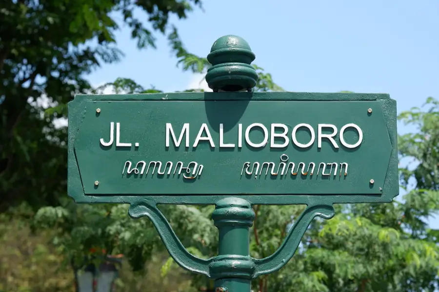

Temukan Keajaiban Yogyakarta
Kota di mana tradisi, seni, dan keindahan alam berpadu sempurna.
Jelajahi SekarangSelamat Datang di Jantung Kebudayaan Jawa
Yogyakarta, atau sering disebut Jogja, adalah sebuah provinsi istimewa di Indonesia yang kaya akan sejarah dan warisan budaya. Dari kemegahan candi-candi kuno hingga keramahan warganya, Jogja menawarkan pengalaman tak terlupakan bagi setiap pengunjung. Jelajahi pesonanya dan biarkan diri Anda terhanyut dalam keindahannya.
Destinasi Unggulan

Candi Prambanan
Kompleks candi Hindu terbesar di Indonesia yang didedikasikan untuk Trimurti.
Selengkapnya
Pantai Parangtritis
Nikmati sunset yang magis dan ombak yang menenangkan di pantai paling ikonik di Jogja.
Selengkapnya

Jalan Malioboro
Pusat keramaian, belanja, dan kuliner khas Jogja yang tak pernah tidur.
Selengkapnya